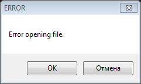

Окно RAM Watch предназначено в основном для слежения за значениями адресов, которые ты добавляешь в список окна. Оно открывается в эмуляторе FCEUX через Tools -> RAM Watch (или горячей клавишей).
Окно привязано к главному окну эмулятора. Если свернуть окно эмулятора, окно RAM Watch также будет свернуто. А если свернуть окно RAM Watch отдельно, оно окажется в левом нижнем углу, а не в панели задач Windows.
Содержимое окна отображает байты в адресах, добавленных в список. Для слежения можно добавлять любые адреса RAM диапазона $0000-$07FF. Обновление данных происходит ежекадрово в конце кадра.
Данные не обновляются при работе с Debugger'ом во время паузы эмулятора, в отличие от данных в окне Hex Editor.
При закрытии окна эмулятора тебе предложат сохранить изменения списка, если таковые имеются.
Выбери опцию из списка, чтобы посмотреть подробную информацию.
| Добавление адресов | Описание кнопок | Меню File |
Адреса добавляются кнопкой New, которая активна всегда. Появится окно редактирования адреса Edit Watch.
В список нельзя добавлять 2 одинаковых адреса с одинаковыми опциями. Однако можно добавить один и тот же адрес несколько раз, если выбранные опции между ними не будут повторяться.
Здесь ты выбираешь адрес, который отобразится в списке, и пометку для этого адреса.
В этом поле ввода указывается адрес, который будет добавлен в список. Можно добавлять только адреса в диапазоне $0000-$07FF. При попытке добавить другие адреса окно сообщит об ошибке.
Адреса можно записывать без лишних нулей слева, а также строчными буквами (они автоматически будут записаны заглавными). Все неподдерживаемые символы будут удалены при сохранении адреса.
Если самый первый или ни один из веденных символов не поддерживается, например при попытке добавить адрес AC русскими буквами, итоговый адрес будет $0000.
При желании добавь пометку к адресу, которая появится в главном окне в графе Notes. Поддерживаются символы кириллицы.
Notes не относится к тем опциям, благодаря которым можно добавлять один и тот же адрес несколько раз.
В этом разделе указывается тип данных, который будет отображен в главном окне в графе Value.
Десятичные знаковые числа. Байты от #$00 до #$7F отобразятся как от 0 до 127, а байты от #$80 до #$FF отобразятся как от -128 до -1.
За знаковость отвечает старший бит отображаемого байта. Номер старшего бита зависит от опции Data Size.
Десятичные беззнаковые числа. Байты от #$00 до #$FF отобразятся как от 0 до 255.
Стандартные шестнадцатеричные числа, как они выглядят в окне Hex Editor.
Отображение байта как набор из 8-ми битов.
Опции Binary не существует в старой версии эмулятора.
Размер отображаемых данных в графе Value. Редко используемая опция, обычно нужно оставлять по умолчанию 1 byte.
Таблица с расшифровкой опций, порядок отображаемых байтов и поддержка Binary Data Type.
| Data Size | Кол-во битов | Порядок байтов | Binary |
| 1 byte | 8 бит | Big-endian | Да |
| 2 bytes | 16 бит | Little-endian | Нет |
| 4 bytes | 32 бита | Big-endian | Нет |
В примере рассматривается адрес $0100. В RAM находятся следующие байты:
Для опции 2 и 4 bytes берутся соседние адреса. Результат отображения адреса $0100 с опцией Hexadecimal Data Type:
Некоторые кнопки становятся активными лишь после клика на адрес из списка. Однако если закрыть окно и открыть повторно, почти все неактивные кнопки станут активными, но они все равно не будут работать, если адрес из списка не был предварительно выделен.
Адрес выделяется кликом по нему. Для выделения нескольких разных адресов удерживай кнопку Ctrl перед кликом. Для выделения диапазона адресов сначала кликни на первый адрес диапазона, а затем, удерживая кнопку Shift, кликни на последний адрес диапазона (либо удерживай Shift и жми клавишу вверх/вниз).
Горячие клавиши для кнопок смотри во вкладке Watches. Изменить их нельзя. Клавиши U и D означают стрелки Up (вверх) и Down (вниз) на клавиатуре.
Некоторые кнопки вызывают окно Edit Watch, подробности про него читай в подразделе с добавлением адресов.
Перемещают по списку выделенный адрес/разделительную полоску на 1 строку вверх/вниз. Нельзя перемещать сразу несколько адресов.
Позволяет отредактировать выделенный адрес/разделительную полоску, вызвав окно Edit Watch.
Удаляет выделенные адреса/разделительные полоски из списка.
Вызывает окно Edit Watch для создания нового адреса.
Дублирует выделенный адрес/разделительную полоску. Вызывает окно Edit Watch, в которое будут скопированы его параметры.
Если не изменять параметры адреса, сохранить его не получится, так как уже существует аналогичный адрес. Однако разделительную полоску можно дублировать с таким же именем.
Создает разделительную полоску в конце списка адресов. Вызывает окно Edit Watch, в которой можно дать имя полоске (не обязательно). Поддерживаются символы кириллицы. Текст будет отображен синим цветом.
Если сохранить разделители в файле .wch, то при следующем запуске эмулятора и подгрузке файла .wch со списком адресов, символы в строке будут смещены вверх. Отправил багрепорт разработчику.
В старой версии эмулятора нельзя дать имя разделителю, и отображается он в списке немного иначе.
Замораживает в адресе байт/число, который в данный момент отображается в графе Value. Такой адрес выделяется светло-фиолетовым цветом. Если в списке существует несколько одинаковых адресов, будет выделен каждый из них.
При работе с Debugger'ом на паузе эмулятора, отображаемый байт в окне RAM Watch может отличаться от того, который в данный момент находится в Hex Editor'е.
Если в разделе Data Size была выбрана опция 2 или 4 bytes, байты будут заморожены в соответствующем диапазоне адресов. Причем чем больше адресов диапазона оказываются замороженными, тем более темным будет выделение.
Разморозить адрес можно лишь через окно Hex Editor или Cheats, после чего выделение адреса пропадет. Изменить замороженный байт можно только в окне Cheats.
Список адресов для слежения при желании можно сохранить в файле .wch. Файл открывается текстовым редактором.
В этом подразделе рассказывается про особенности открытия/сохранения файла, а также про другие возможности окна.
Полностью очищает список адресов и разделителей. Окно предложит предварительно сохранить изменения, если ты что-то делал с текущим списком адресов.
Позволяет подгрузить файл .wch. Если ты что-то делал с текущим списком адресов, то после выбора файла окно предложит сохранить изменения.
Сохранить изменения в одноименный файл .wch в папке с игрой (предварительно подтвердив имя файла), либо мгновенное сохранение в тот файл, который на данный момент уже открыт.
Если при использовании опции Auto-load появилась ошибка про открытие файла, игра сохранит изменения в файл (предварительно создав его), который она пыталась открыть.
Однажды при попытке сохранить пустой файл эмулятор вылетел с ошибкой. Повторно воспроизвести пока не удалось.
Сохранить изменения с выбором имени файла.
К текущему списку добавляются данные из файла .wch, с предварительным выбором этого файла. Добавленный список адресов из файла появятся внизу текущего списка. Однако если какие-то из добавленных адресов совпадают по параметрам с уже существующими в списке, то они будут проигнорированы.
Данная опция не считается изменением списка с точки зрения окна RAM Watch, и без дополнительных изменений списка окно не предложит сохранить изменения перед закрытием эмулятора или открытием другого файла. А также при выборе опции Save файл не перезапишется, его нужно перезаписывать через Save As.
Здесь отображается список файлов .wch, которые были задействованы в последний раз. Список обновляется сразу при создании/использовании файла.
Выбор файла из списка по механике аналогичен опции Open, но без ручного поиска файла в проводнике.
При включении данной опции окно RAM Watch будет открываться автоматически, и подгружать файл .wch, который был использован в последний раз, независимо от игры. Если файла не существует, появится сообщение об ошибке.

Выбрав OK, игра попробует загружать следующие файлы из списка Recent. Если нажать Отмена, или если игре так и не удалось найти другие файлы, откроется окно RAM Watch с пустым списком.
Если предыдущая попытка найти файл провалилась, и новый файл не был создан, окно с ошибкой в следующий раз не появится из-за очищенного списка Recent.
Включает сохранение координат позиции окна на экране. При закрытии окна эмулятор запоминает его положение, и в следующий раз оно откроется в том же месте.
По умолчанию окно открывается справа от эмулятора. Если не хватает места до правого края экрана, то откроется слева.
Закрывает окно RAM Watch как после нажатия красного крестика. Однако после закрытия окна текущий список адресов остается нетронутым, и он отобразится если повторно открыть окно.